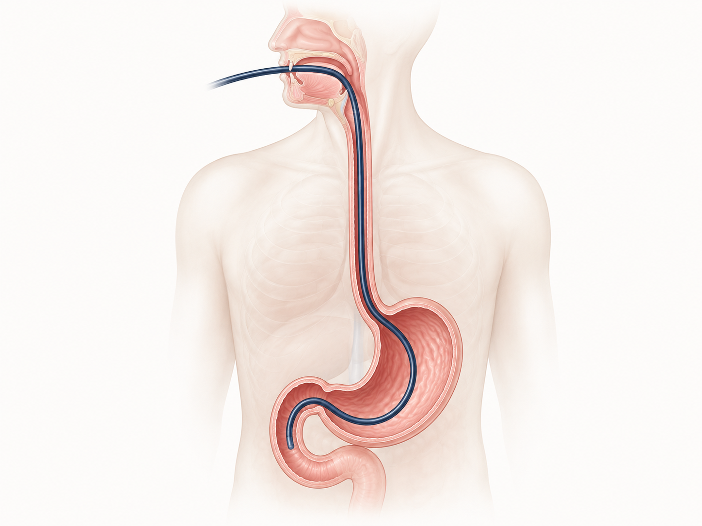

즉시 119 또는 응급실 · 광교바른내과 ☏ 031-893-4560
- 1. 심한 가슴·복통이 지속·악화 — 만지면 더 아픈 배 또는 가슴, 펴기 어려운 자세. 천공 (Perforation, 식도·위벽에 구멍 — 매우 드물지만 가능) 신호.
- 2. 토혈 또는 커피찌꺼기 색 구토 — 피가 섞인 토, 또는 짙은 갈색 구토물. 위장 출혈 의심 신호.
- 3. 검은 변 (흑색변) — 평소와 다른 끈적한 검은 변. 위장 출혈 가능성.
- 4. 어지러움·식은땀·실신 — 일어날 때 잡아야 하는 정도, 손발 차갑고 식은땀. 즉시 119, 보호자 동반.
- 5. 38℃ 이상의 발열·오한 — 떨림 동반, 감염 가능성.

내시경이 식도·위·십이지장을 통과했지만 조직을 떼지 않아 회복이 매우 빠릅니다.
회복 단계 (당일~1일)
- 1. 진정 회복 (30분~1시간) — 수면 내시경 후 어지러움·졸림이 남아 있어 보호자 동반 귀가, 당일 운전·중요 결정·기계 조작 X.
- 2. 가벼운 인후통 — 내시경이 목을 지나갔으므로 1-2일 정상. 찬 음료·아이스크림이 도움. 침 삼킬 때 통증 정도는 보통 자연 호전.
- 3. 식이 재개 — 진정 회복 후 1-2시간 뒤 가벼운 식이부터 시작 (미음·죽·연두부). 사레가 들리지 않으면 부드러운 식이로 진행.
- 4. 당일 저녁 — 평소 양의 2/3 정도, 자극적·매운·뜨거운 음식 회피. 음주·카페인 당일 X.
- 5. 다음날부터 — 일반 식이 복귀 가능. 운동·사우나·여행도 평소대로.
약물 재개 · 다음 검사
- 1. 평소 약 — 식사 재개 후 평소대로 복용. 조직검사를 하지 않았으므로 추가 제한 없음.
- 2. 항혈전제 (피를 묽게 하는 약) — 아스피린·플라빅스·와파린·자렐토 등을 평소 드시는 분은 시술 의사 진료실에서 받으신 재개 시점을 따르세요 (보통 즉시 재개).
- 3. 당뇨약·인슐린 — 식사량 회복까지 저혈당 주의, 필요시 의사 상담.
- 4. 결과 통보 — 영상·내시경 소견은 당일~며칠 내 외래·문자로 통보. 받지 못하시면 ☏ 031-893-4560 전화.
- 5. 다음 위내시경 시점 — 정상 소견이면 보통 1-2년 후. 가족력·증상·위험 인자 (위염·역류·헬리코박터 양성)에 따라 더 짧을 수 있어 의사가 안내합니다.